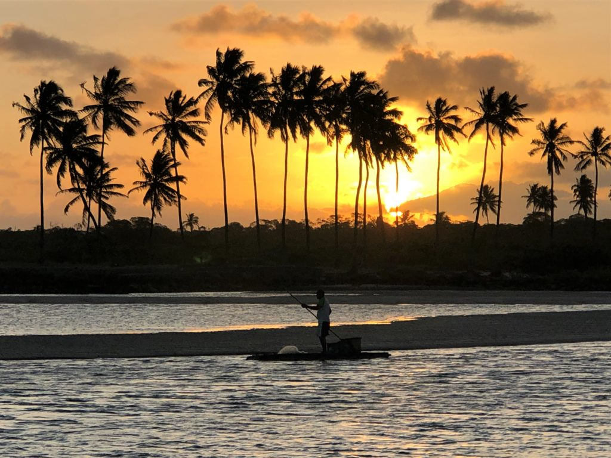
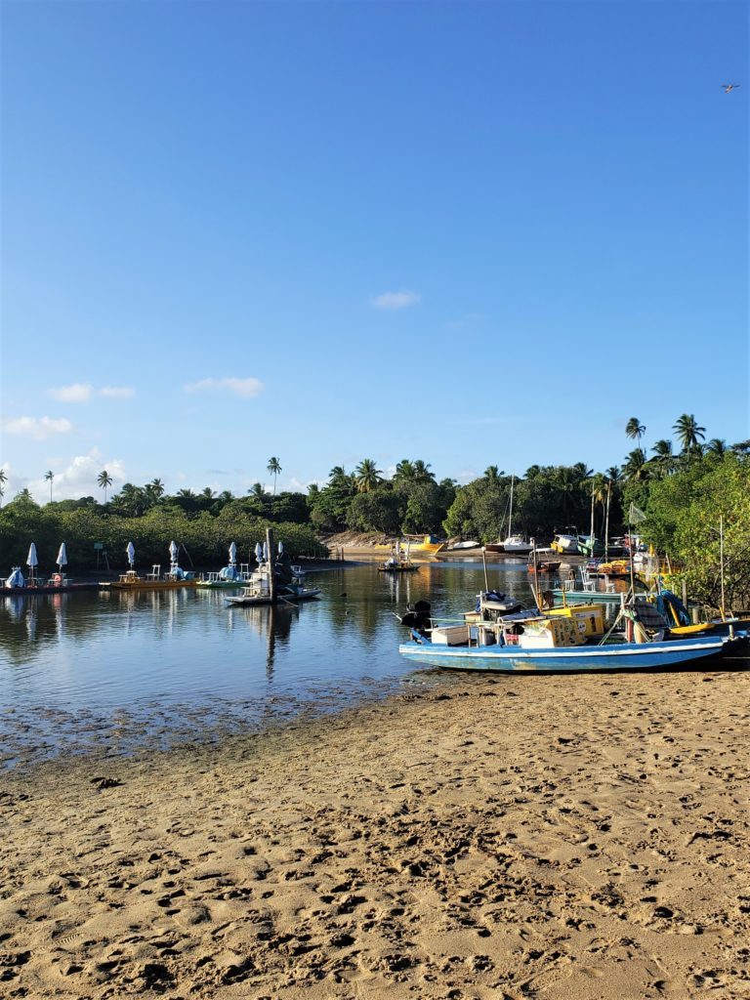
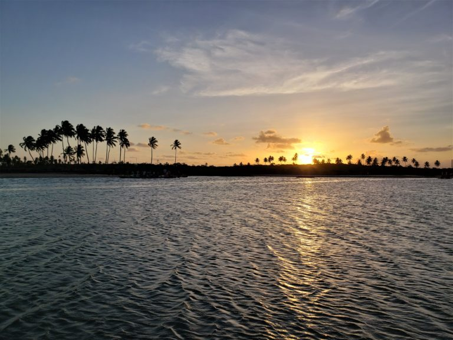
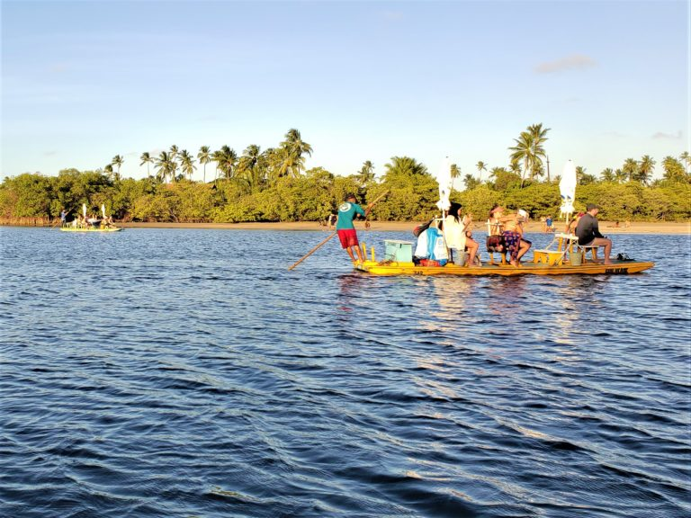

Praia de Maracaipe
Apesar de Porto de Galinhas ter diversas atividades legais para pessoas de todas as idades, muita gente acaba se focando apenas no centrinho, esquecendo outras atrações lindíssimas que ficam a curtas distâncias de carro. Um exemplo disso é ver o pôr do sol em Maracaípe, espetáculo que pode ser admirado a bordo de jangadas que também levam para observar cavalos-marinhos que moram na foz do rio.
Onde fica Maracaípe?
A Praia de Maracaípe fica no Município de Ipojuca/PE, a 3,5km do centro de Porto de Galinhas,
e é conhecida por suas ondas que atraem dezenas de surfistas diariamente.
O pôr do sol maravilhoso, no entanto, acontece no Pontal de Maracaípe,
local onde o Rio Maracaípe deságua no mar. Para chegar até lá, são só 15 minutos de carro do centrinho de Porto.
Fotos
  E ai, ficou com vontade de ir? Assistir ao pôr do sol em Maracaípe é, na minha opinião, um programa imperdível para quem vai a Porto de Galinhas, então tente colocar no seu roteiro por lá e se tiver alguma outra dica sobre o passeio, conta pra gente aqui nos comentários.